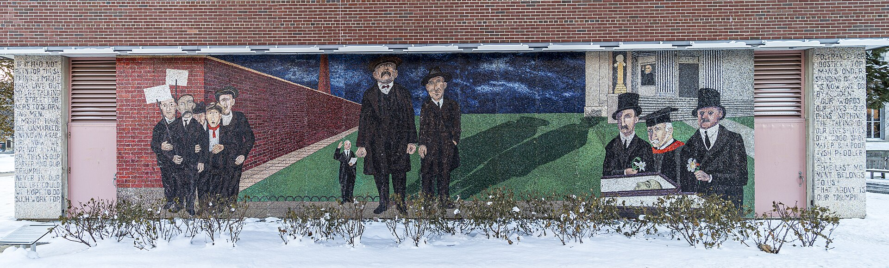

대표 화가
벤 샨, 《사코와 반제티의 수난》 · 사회적 사실주의 · 미국
선정 이유: 샨은 실제 정치 사건과 명료한 인물 서사를 결합해 미국 사회적 사실주의의 비판적·교육적 성격을 대표한다.
처형된 두 이민자와 사건 관계자들이 단순하고 건조한 형태로 한 화면에 배치된다. 영웅화보다 부당한 사법 제도와 기억의 문제를 직접 제기해 사회적 사실주의가 공공 논쟁에 개입한 방식을 보여 준다.
Social Realism
참고 학습
사회적 사실주의는 20세기 여러 지역에서 빈곤, 노동, 인종, 불평등과 정치적 갈등을 읽기 쉬운 구상 이미지로 드러낸 넓은 경향이다. 국가가 정한 공식 양식이 아니라 사회 현실에 개입하려는 다양한 작가의 선택이다.
19세기 사실주의의 동시대 현실 관심을 정치적 대중 매체로 확장하며, 국가가 낙관적 사회주의 미래를 규정한 사회주의적 사실주의와는 제작 권력과 목적이 다르다.
흔한 오해: 사회 문제를 다룬 사실적 그림을 모두 같은 이념으로 묶으면 안 된다. 작가, 공동체, 노동운동, 정부에 대한 입장이 서로 다를 수 있다.
학술 참고: MoMA · Social Realism
사회적 사실주의의 시대적 배경과 시각적 특징을 국가별 전개 속에서 살펴본다.

선정 이유: 샨은 실제 정치 사건과 명료한 인물 서사를 결합해 미국 사회적 사실주의의 비판적·교육적 성격을 대표한다.
처형된 두 이민자와 사건 관계자들이 단순하고 건조한 형태로 한 화면에 배치된다. 영웅화보다 부당한 사법 제도와 기억의 문제를 직접 제기해 사회적 사실주의가 공공 논쟁에 개입한 방식을 보여 준다.
더 볼 이유: 마시는 사회적 사실주의가 대공황기 도시의 군중과 대중 오락을 관찰하는 방식을 보여 준다.
영화관 광고와 빽빽한 인물은 도시 소비문화와 계층 현실을 다루는 사회적 사실주의의 특징을 드러낸다. 고전적 인체 드로잉을 소란스러운 뉴욕 거리의 리듬에 적용한 점은 마시만의 특성이다.
더 볼 이유: 로런스는 미국 사회적 사실주의가 흑인 대이동의 집단 역사를 연속된 현대 서사로 기록한 모습을 보여 준다.
단순한 형상과 반복되는 색면이 많은 사람의 이동을 명료하고 리듬 있게 전달한다. 개인 영웅 대신 공동체의 경험을 60개 패널의 시각적 문장으로 만든 점은 로런스만의 특성이다.